Soeun Yoon
Senior Brand Designer who shapes identity, campaigns, and everything the brand touches.
Saleslog
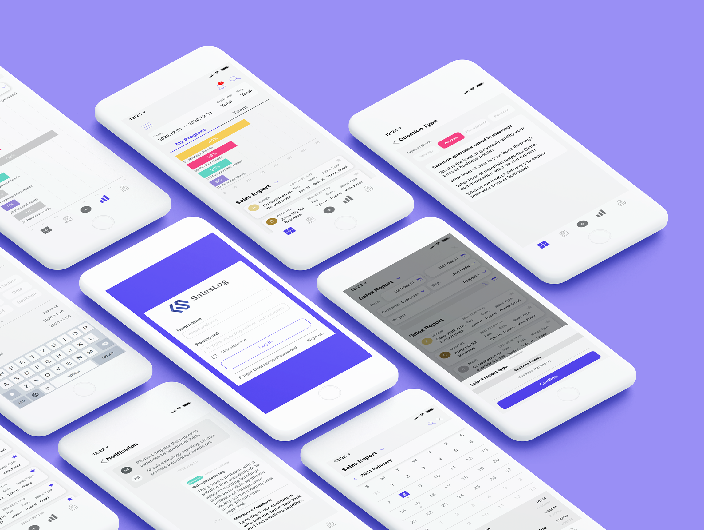
Overview
Saleslog is a B2B sales platform built to help sales teams document, share, and act on what they learn from customers, especially in a remote and contact-free environment where the informal knowledge-sharing of in-person sales had broken down.
Working with TheKlab, a B2B sales and marketing consultancy, I led design across both web and mobile, owning the full process from research and user modeling through interaction design and final prototype.
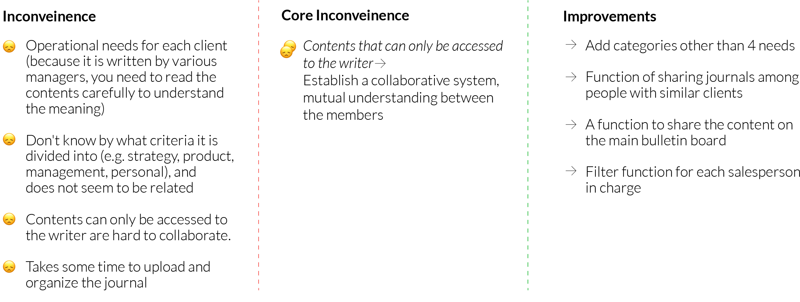
Problem
Remote work and social distancing fundamentally changed how salespeople build relationships and share knowledge. Saleslog needed to fill the gap: a platform that made documentation feel natural, collaboration feel immediate, and progress feel visible to both salespeople and their managers.
Research
The research phase surfaced three key tensions: sales had become measurably harder post-COVID, the persuasion-driven nature of sales resisted rigid documentation tools, and most teams had adopted e-commerce workflows reactively rather than strategically. These findings shaped the core design principle — the tool had to reduce friction in documentation, not add to it.
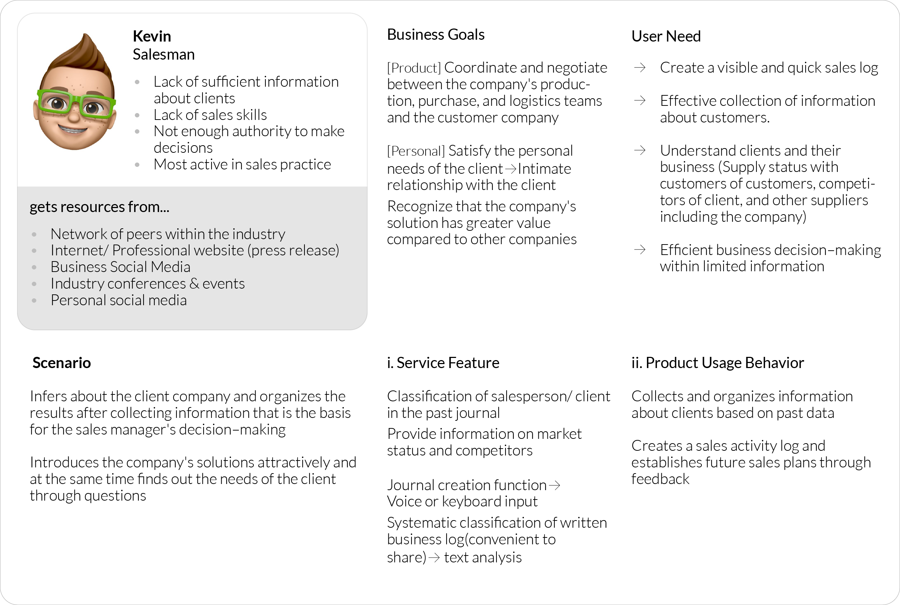
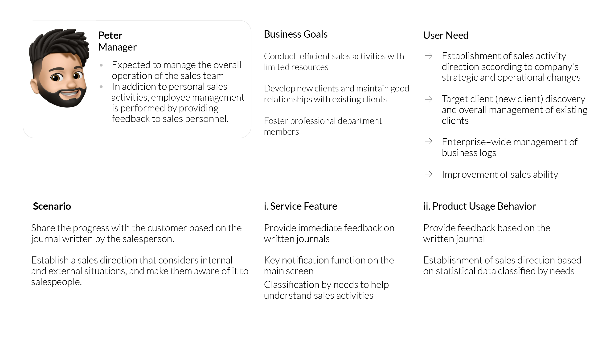
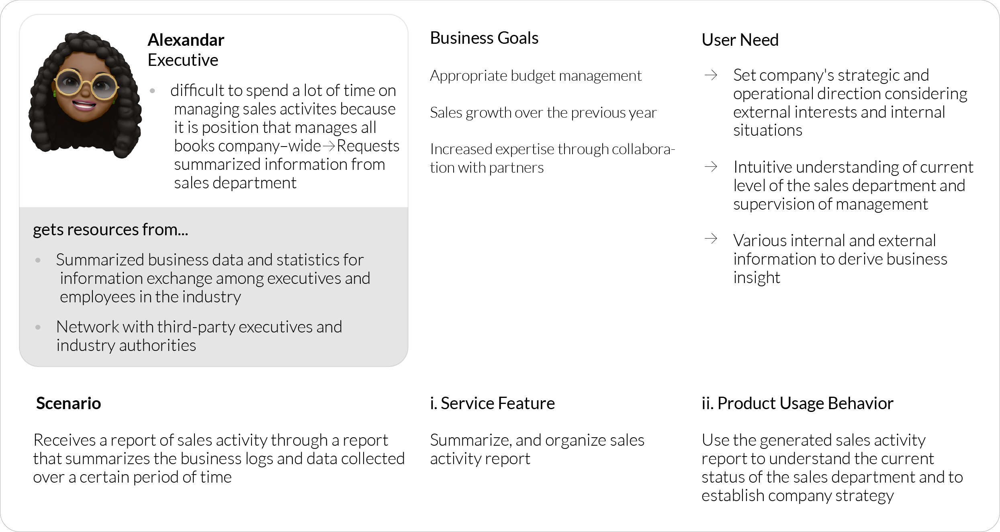
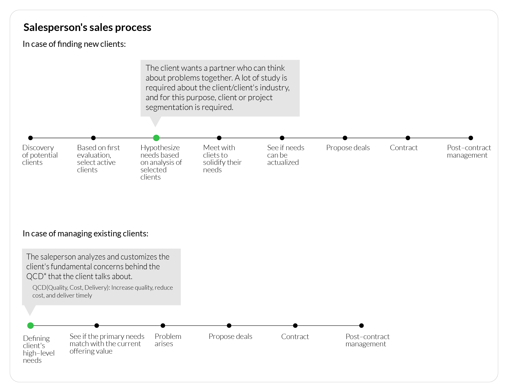
Competitive Analysis
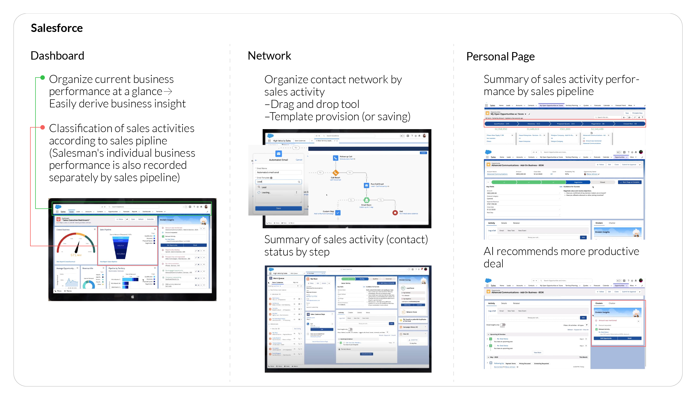
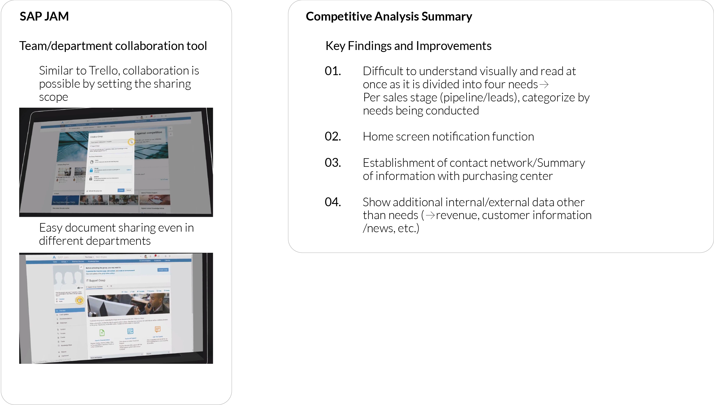
Interaction Model
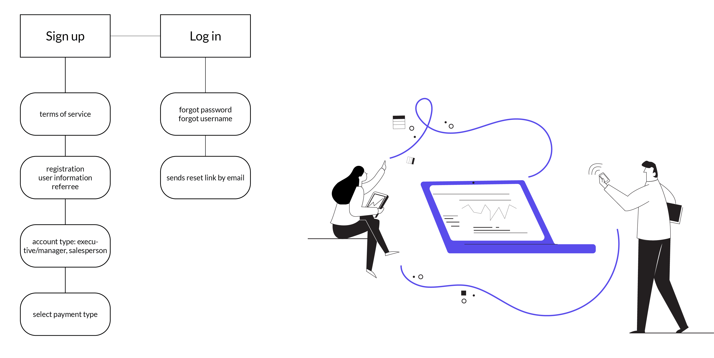
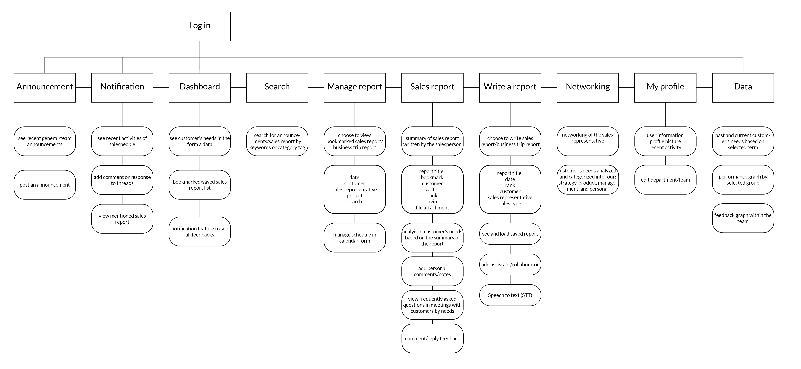
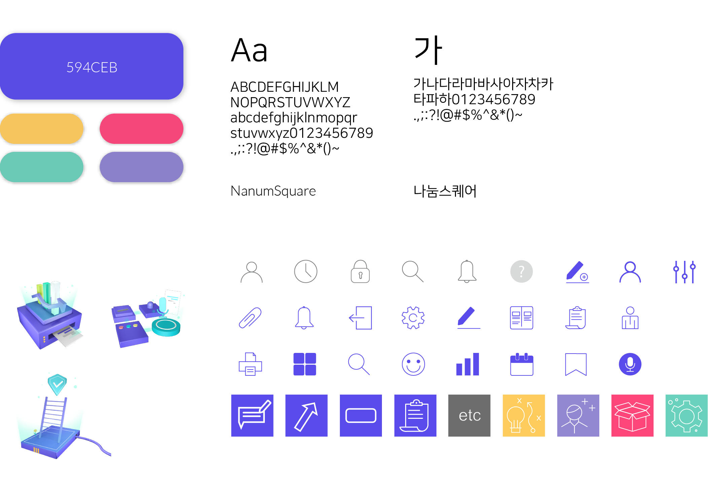
Design Decisions
Three features drove the core experience.
Core features
Sales Report Entry
speech-to-text input to make documentation feel conversational rather than administrative
Feedback Layer
visibility into individual progress and targeted support and FAQ access during live customer meetings
Progress Dashboard
historical data in a trackable bar graph format, letting both salespeople and managers set and assess goals